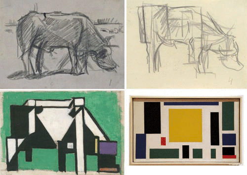

.JeSuis {
energie: 100%;
equilibre: 100%;
perseverance: 100%;
efficacite: 100%;
motivation: 200%;
}
Tout d'abord si j'ai choisis comme thème pour mon e-C.V. les Compostions de Mondrian, c'est qu'à l'instar de ces Œuvres, je suis simple, coloré, facile à aborder mais il faut prendre un certain recul pour me voir dans mon intégralité.

Le Web. Pourquoi ET Comment ??
Adepte d'Internet depuis l'ère du Peer2Peer et de nature curieuse, c'est en me demandant justement comment ? Comment sur MySpace, les maisons de disques de L' époque arrivaient à personnaliser les pages de leurs artistes que j'ai découvert, grâce à un click-droit, le code source ! LE Graal, LA clef, qui après de très nombreuses heures de bidouille et de recherche , me permettait de pouvoir Enfin donner le design que je voulais à ma page, le Web devient pour moi une nouvelle forme d'expression Artistique.
Apparemment ma page fit son petit effet puisque très rapidement je reçu beaucoup de demandes, je me suis donc consacré à cette nouvelle aventure essayant d'aller le plus loin possible dans le Design aussi bien Graphique que Fonctionnel.
Autodidacte passionné, à la recherche d'outils plus performants, j'ai appris à utiliser des logiciels tels que Photoshop, Illustrator, Flash, Dreamweaver ou 3DSmax.
Pour parfaire mon apprentissage je décide alors de suivre une 1ère formation en web development mais il s'avère que le programme ne correspond pas à ce que je désire d'où une certaine frustration et une légère déception.
Plus tard pour les besoins de mon activité professionnelle je me penche alors vers le marquage et l'ennoblissement textile et ses différentes techniques, Le flex l'impression numérique, la broderie ou la sérigraphie pratiquant chacune de ces techniques pour mieux la comprendre.
Je crée plusieurs collections de vêtements pour différentes marques, en travaillant au sein d'une équipe de graphistes et de modélistes ou seul.
Afin de vendre nos créations nous décidons avec mes associés de l'epoque de créer une boutique sur le web, je me remets donc dans le web design en utilisant cette fois le CMS, Prestashop.
Puis c'est pour le Label de Musique que l'on monte avec mes amis d'enfance que l'on réclame mes talents, cette fois j'utilise un autre CMS, Wordpress.
La création de ces sites me donne de nouveau l'envie d'en apprendre plus sur la programmation toujours dans l'optique de repousser mes limites créatives alors pour la 2ème fois je m'inscris à une formation , _Blank., dans laquelle j'apprends enfin ce que je voulais savoir ET qui par conséquent répond totalement à mes attentes...
... Et la page se tourne.